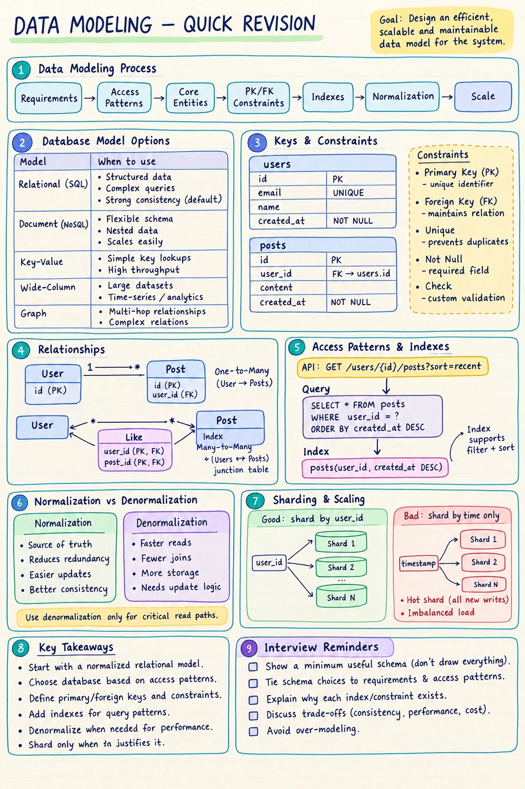
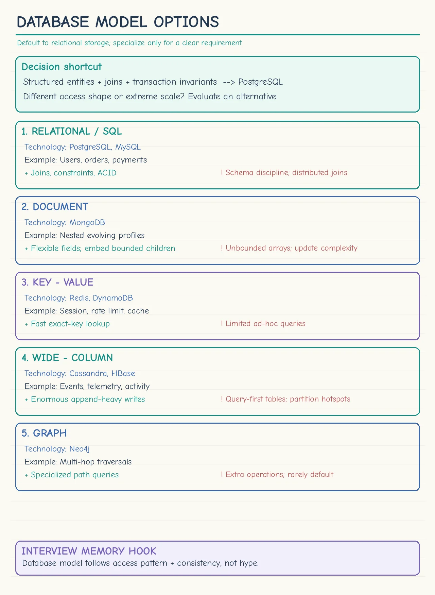

Topic · Data Modeling
Data Modeling Approach
Decide the entities, their IDs and relationships, where data lives, and how it is queried - driven by data volume, access patterns, and consistency.


Database model options
Tap for full size.


Quick Revision
- Model from requirements and access patterns, not a favourite technology.
- Default: PostgreSQL + normalized schema unless a concrete query, consistency, or scale need says otherwise.
- Show the minimum useful schema: core fields, PKs, FKs, key constraints, indexes, optional partition key.
- Tie every decision to data volume, access patterns, or consistency.
- Used twice in an interview: entities during requirements, a minimal schema during high-level design.
- "Good enough" is the target - over-modeling wastes time.
Database model options
- Relational (default) - structured entities, joins, transactions, uniqueness, integrity. Users, orders, bookings, inventory, payments, posts. Scale it first with indexes, pooling, caching, replicas, partitioning, vertical scaling.
- Document - rapidly changing, nested, varied records. Embedding removes joins but complicates updates; never embed unbounded lists. Interview scope is usually stable, so the main reason for it often doesn't exist.
- Key-value - exact-key reads: sessions, flags, counters, cached objects, idempotency records, rate-limit state. Usually complements SQL, not replaces it.
- Wide-column - huge append-heavy writes: telemetry, events, activity history. Model from queries, e.g.
partition_key = user_id,clustering_key = timestamp. - Graph - only when multi-hop traversal dominates. Friends/followers alone don't justify it; a relationship table is usually enough.
Applying it in an interview
- Requirements - core entities; key writes and reads (filter, sort, pagination, aggregation); unique fields → constraints; which writes need a transaction; strong vs eventual consistency; unbounded relationships; data lifecycle (retention, soft delete, audit); hottest entity.
- Estimation - rows/day, raw storage, practical storage (+ replicas, indexes, overhead), relationship cardinality (avg and max).
- High-level design - PostgreSQL as source of truth, minimal schema, indexes derived from APIs, cache hot projections, cursor pagination, shard only when capacity math requires it.
rows/day = write QPS × 86,400 raw storage = records × avg record size × retention practical = raw + replication + indexes + overhead
- Moderate QPS, hundreds of GB - one relational primary + replicas.
- Billions of append-only records - partitioning, archival, or a write-optimized model.
- A few very hot keys - caching, replication, key splitting.
- Unbounded children - separate table + cursor pagination.
users(id PK, username UNIQUE NOT NULL, email UNIQUE NOT NULL, created_at) posts(id PK, user_id FK, content NOT NULL, created_at) comments(id PK, post_id FK, user_id FK, content NOT NULL, created_at) likes(user_id FK, post_id FK, created_at, PRIMARY KEY (user_id, post_id)) posts(user_id, created_at DESC) → recent posts by user comments(post_id, created_at) → paginated comments likes(post_id) → list/count likes
Keys, indexes, normalization: Schema Design. Partitioning: Sharding and Shard Keys.
Trade-offs
| Choice | Benefit | Cost / risk |
|---|---|---|
| Relational as default | Transactions, joins, constraints, flexible queries | Schema evolution and horizontal scale need planning |
| Document database | Flexible nested records, fewer joins | Update complexity, duplication, unbounded documents |
| Key-value store | Very low-latency exact-key access | Weak ad-hoc queries and relationships |
| Wide-column store | High append throughput, predictable partition scans | Query-first schema; new access pattern = new table |
| Graph database | Efficient multi-hop traversal | Operational complexity, often unnecessary |
| One primary store | Simple ownership and consistency | Not optimal for every workload |
| Polyglot persistence | Each workload gets an optimized store | Sync, observability, migrations, ops burden |
Failure modes
- NoSQL just because it's "large" - start simple and name the exact limitation first.
- Tables before APIs - list critical access patterns, then derive schema and indexes.
- Dual-writing two stores without failure handling - outbox/CDC, idempotent consumers, replay, reconciliation.
- Cache treated as durable truth - keep it rebuildable; design for cache loss.
- Ignoring deletes - define restrict/cascade, soft delete, retention, tombstones, async cleanup.
- Unsafe migrations - expand-and-contract: add compatible fields, dual-compatible code, backfill, switch, remove.
- Over-modeling the whiteboard - show only what proves the design works.
Interview practice
Answer aloud, then reveal.
Kotak SDE-2 (Aug 2026): parcel delivery - schema, APIs, lifecycle, tracking, assignment, pricing.
users, shipments, shipment_events, delivery_assignments, pricing_rules, payments. Latest status on shipments, immutable history in shipment_events, unique tracking_number, index (shipment_id, event_time), atomic state transition for assignment.
Media.net (Jul 2026): Amazon-like database schema.
users, addresses, products, sellers, inventory, carts, cart_items, orders, order_items, payments. Immutable name/price snapshot in order_items, index orders by (user_id, created_at), update inventory and order state in one transaction.
Agoda (May 2026): cinema booking schema without double booking.
cinemas, screens, seats, shows, show_seats, seat_holds, bookings, payments. One active owner per (show_id, seat_id), atomic conditional update or row lock, TTL-expiring holds.
Nykaa SDE-2 (Mar 2026): multi-outlet restaurant with ingredient consistency under concurrent orders.
outlets, menu_items, outlet_menu, ingredients, recipes, outlet_inventory, orders, order_items, payments. Scope by outlet_id; deduct stock with versioned/conditional updates in a transaction; reject or compensate failures.
Swiggy SDE-2 (Mar 2026): notifications - SMS, email, in-app history, scheduling.
users, devices, notification_preferences, templates, notifications, delivery_attempts. Idempotency key per event, index (user_id, created_at) for history and (status, next_attempt_at) for workers, append attempts.
PayTM SSE (Jan 2026) / Atlassian: Wiki/Confluence schema.
workspaces, pages, page_versions, memberships, page_acl, tags, page_tags, comments. Immutable versions, UNIQUE(workspace_id, slug), index (page_id, version_no DESC), current metadata separate from version content.
PayPal Senior SWE: configs, feature flags, versions, audit, rollback.
services, environments, config_keys, config_versions, active_config, feature_flags, rollout_rules, audit_events. Immutable versions, switch an active pointer to roll out/back, cache resolved config, publish invalidation events.
Atlassian P40/P50: show a scalable friend count beside every post.
Canonical friendship pair indexed both directions; a friend_count projection per user updated transactionally or via idempotent events, plus reconciliation. Counting rows on every read is exact but too expensive.